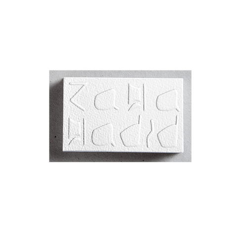

Buisness card
Création d'une carte de visite pour un artiste de notre choix.J'ai fait le choix de mettre en lumière à travers la typographie de style bien spécifique de l'architecte Zaha hadid
contrastée
/ Second fird year at l'ECV of Bordeaux. / Third year of bachlor degree in graphic design at l’Ecole de Design Nantes Atlantique. / Second year of bachelor degree in graphic design in l’Ecole de Design Nantes Atlantique / First year in l’Ecole de Design de Nantes Atlantique as an upgrade in abstarct art. Discovery of design produit , espace, interactivité, graphisme. Specialization in graphic design. / High school diploma in litterature with option in art.
/ Foundation in technical drawing and volume. / Adobe software : Photoshop, Illustrator, after-effect, indesign, / Internship in high school with an interior designer : Michel Heberlet Nantes / Internship in second year of bachelor degree in strasbourg with Atelier Poste 4 / Comunication officer for an insurance company (Smeba) / Eight years of learning Spanish language. / Ten years of learning Englsih language ( 750 points in the TOEIC exam )
/ Regular practice of photography. / Coating and exhibitions of contemporary art. / Sport activity : seven years of tennis and hiking. / I travel as far as possible. In particular to practice my English : Linguistic trips in Irlande , San Francisco and UK. / I am a brownie since 3 years : managment of a group of twenty girls of seven to twelve year old.
Email - paulinecuillerier@me.com Tel - +33631707914
Création d'une carte de visite pour un artiste de notre choix.J'ai fait le choix de mettre en lumière à travers la typographie de style bien spécifique de l'architecte Zaha hadid